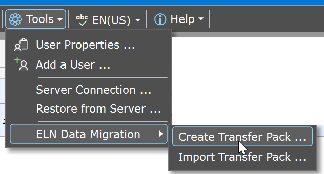

ELN Data Migration
Introduction
When moving to a new computer, you typically also want to transfer your Phoenix ELN data to the new environment. In principle, this may be achieved by following methods, each having its own drawbacks:
- If you regularly back up your personal Documents folder, restoring the last backup on your new computer will also recover your Phoenix ELN data, along with your other files. However, keep in mind that any recent changes to your experiments made after the last backup will not be included, and therefore will be lost after the restore process.
- If optionally connected to an in-house Phoenix ELN server, you can perform a 'restore from server' action to recreate your local experiments database on your new computer. This is also your last resort if your original ELN data are not available anymore, e.g. after a sudden hardware failure. While efficiently restoring your experiments at their latest state, this will not update your ELN application files and settings.
- You could also manually move the 'Phoenix ELN Data' folder and its contents from your personal Documents folder to your new computer at the same location, replacing the current one if already present. However, such manual actions bear the risk of data loss and inconsistencies, and therefore are not recommended.
ELN Transfer Package
To overcome the limitations of above methods, a simple and reliable method for transferring all Phoenix ELN experiments and settings is available. It allows to seamlessly perform a complete ELN data transfer, including all settings, at the desired point in time - typically just before switching your work to the new ELN installation.
Here are the required steps:
- Open Phoenix ELN on the computer to be replaced, i.e. where your current experiments reside.
- Go to Tools > ELN Data Migration > Create Transfer Pack. This creates a transfer package (.elnpkg) at the location of your choice. Note: Although the package is named after the first user encountered in the experiments database, it will contain the experiments of all local users if present.

- If not yet present, install Phoenix ELN on the new computer. It will contain the demo experiments at this stage.
- Open Phoenix ELN on the new computer, go to Tools > ELN Data Migration > Import Transfer Pack, select the .elnpkg package you created before, then click 'Import Package' in the appearing dialog.
- The application will perform the transfer and subsequently restarts with your transferred experiments and settings in place.
Important: Do not continue to use the previous ELN installation anymore after data migration, since this would result in two parallel, but inconsistent copies of your experiments database!
Revert Migration
Be careful not to overwrite non-demo experiments by accident when transferring your ELN data to the new computer. A new installation always contains demo experiments, which are uncritical to replace. However, if your new installation already contains productive non-demo experiments for some reason, you will obtain a warning about potential data loss before proceeding with the data migration.
If against all warnings productive data accidentally were overwritten, e.g. by importing a wrong transfer package, an emergency operation is available for reverting the operation. Thus, the file 'recovery.elnpkg' is always placed on your desktop after completed data migration where non-demo experiments were replaced. You can import this file via Tools > ELN Data Migration > Import Transfer Pack to revert the migration to its original state.
Once the intended data migration was successfully completed, you should delete above recovery file as soon as possible, to prevent accidental permanent reversal to an earlier state of your ELN environment at a later stage by importing it again. Note that reverting a data migration cannot be reverted.